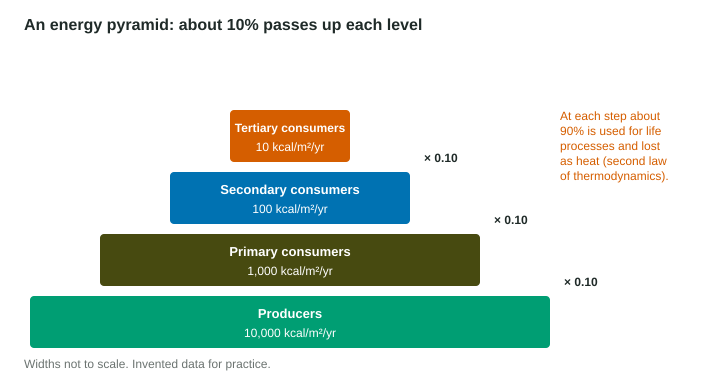

Nutrients cycle; energy does not. Carbon and nitrogen move around and around, but energy enters an ecosystem as sunlight, passes up through the trophic levels, and leaves as heat. Following that one-way flow explains some of the most important patterns in ecology: why there are so few large predators, why ecosystems rarely have more than four or five trophic levels, and why a field of grain feeds more people than the same field used to raise cattle.
The laws of energy
Two laws of thermodynamics describe every energy transfer.
- First law: energy is not created or destroyed; it only changes form. Light becomes chemical energy in sugar; sugar becomes motion and heat in an animal.
- Second law: every transfer turns some energy into heat that is spread out and less useful. No transfer is 100% efficient.
So energy is never "used up". It ends up as heat released to the surroundings, which no organism can use as food.
The 10% rule
When a grasshopper eats grass, most of the grass's energy never becomes grasshopper. Some grass is not eaten. Some is eaten but not digested and passes out as waste. Of what is digested, most is burned in cellular respiration to power movement, growth and body heat, and leaves as heat. Only a small share is stored as new tissue that a frog could eat.
On average, about 10% of the energy at one trophic level is passed to the next. For the producers, start from the energy they store, the net primary productivity (NPP), because that is what plant-eaters can eat; use GPP only if a question tells you to. Real transfers range from roughly 5% to 20%, but the exam uses 10%.

Worked example: going up. Producers store 20,000 kcal/m²/yr. How much reaches the secondary consumers?
Count the steps: producers → primary consumers → secondary consumers is 2 steps.
Setup:
Answer: 200 kcal/m²/yr. Multiplying once gives the primary consumers (2,000); three times would go one level too far, to the tertiary consumers (20).
Worked example: going down. Hawks (tertiary consumers) need 50 kcal/m²/yr. How much must producers store?
Three steps down, so divide by 0.10 three times:
Answer: 50,000 kcal/m²/yr. Going down the levels the numbers get bigger.
Measuring transfer efficiency
When real data are given, compute the efficiency of each step:
If algae store 8,000 kcal/m²/yr and zooplankton 880, the transfer is . Do not confuse one step with the whole sequence: bass storing 7 kcal/m²/yr get
Pyramids
| Pyramid | Shows | Shape |
|---|---|---|
| Energy | energy per area per time at each level | always narrows going up |
| Biomass | mass of living tissue at each level | usually narrows; can be inverted in some oceans, where fast-growing algae are eaten quickly |
| Numbers | count of organisms at each level | often narrows; one oak tree can feed thousands of insects, giving an odd shape |
Biomass is the total mass of living things in an area. It shrinks at higher levels for the same reason energy does: less energy reaches each level, so less tissue can be built there.
Consequences
- Few levels. After four or five steps there is too little energy left to support another population.
- Rare top predators. A wolf pack needs a very large area of producers beneath it.
- Eating lower feeds more people. People who eat grain are primary consumers. Feeding the grain to cattle first adds a step, and most of the grain's energy is lost as the cattle's body heat.